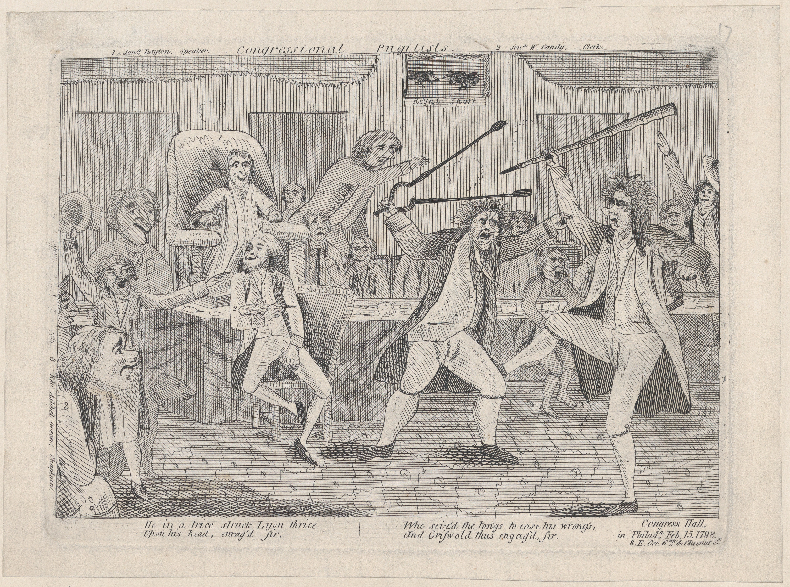

Directions: Work through the five stations in order. For each record, state whether it defends the government's power or the citizen's speech, and what it claims the Constitution says. At the end, complete the table and judge whether the Sedition Act was a wartime necessity or a party weapon. Stations 1, 2, 3, and 5 are verbatim documents with cuts marked by ellipses and disclosed in the Source lines. Station 4 is a teaching summary built from the public record, and it says so on its face.
Source: U.S. Congress (signed by President John Adams), The Alien and Sedition Acts, 1798, as recorded in the audited TPSP bank record alien-and-sedition-acts-1798 (Yale Avalon Project). Cuts are marked with ellipses and disclosed here.
[From the Sedition Act of 1798, approved July 14]
SEC. 2. And be it farther enacted, That if any person shall write, print, utter or publish, [...] any false, scandalous and malicious writing or writings against the government of the United States, or either house of the Congress of the United States, or the President of the United States, with intent to defame the said government [...] or to bring them, or either of them, into contempt or disrepute; or to excite against them, [...] the hatred of the good people of the United States, or to stir up sedition within the United States, [...] then such person, being thereof convicted before any court of the United States having jurisdiction thereof, shall be punished by a fine not exceeding two thousand dollars, and by imprisonment not exceeding two years.
[From the Alien Enemies Act of 1798, approved July 6]
SECTION 1. Be it enacted [...] That whenever there shall be a declared war between the United States and any foreign nation or government, or any invasion [...] threatened against the territory of the United States, [...] and the President of the United States shall make public proclamation of the event, all natives, citizens, denizens, or subjects of the hostile nation or government, being males of the age of fourteen years and upwards, who shall be within the United States, and not actually naturalized, shall be liable to be apprehended, restrained, secured and removed, as alien enemies.
State which side this station defends, the government's power or the citizen's speech. Then name the three kinds of writing the Sedition Act punishes and the two penalties a convicted person faces.
What does this station claim the Constitution allows? Answer from the document itself: who is given power here, over whom, and under what stated condition in the Alien Enemies Act?
Source: Thomas Jefferson, Draft of the Kentucky Resolutions, October 1798, as recorded in the audited TPSP bank record jefferson-kentucky-resolutions-1798 (Yale Avalon Project). Jefferson drafted the resolutions in secret while serving as vice president. Cuts are marked with ellipses and disclosed here.
1. Resolved, That the several States composing the United States of America, are not united on the principle of unlimited submission to their General Government; but that, by a compact under the style and title of a Constitution for the United States, and of amendments thereto, they constituted a General Government for special purposes, -- delegated to that government certain definite powers, reserving, each State to itself, the residuary mass of right to their own self-government; and that whensoever the General Government assumes undelegated powers, its acts are unauthoritative, void, and of no force; [...] that the government created by this compact was not made the exclusive or final judge of the extent of the powers delegated to itself; since that would have made its discretion, and not the Constitution, the measure of its powers; but that, as in all other cases of compact among powers having no common judge, each party has an equal right to judge for itself, as well of infractions as of the mode and measure of redress.
8th. Resolved, That [...] where powers are assumed which have not been delegated, a nullification of the act is the rightful remedy: that every State has a natural right in cases not within the compact, (casus non foederis,) to nullify of their own authority all assumptions of power by others within their limits: [...] that confidence is everywhere the parent of despotism -- free government is founded in jealousy, and not in confidence; [...] In questions of power, then, let no more be heard of confidence in man, but bind him down from mischief by the chains of the Constitution.
State which side this station defends. Then state Jefferson's compact claim in your own words: who made the federal government, and what powers did it receive?
What does this station claim the Constitution says about who judges a federal law? Name the remedy Jefferson calls rightful when the government assumes powers that were not delegated.
Source: James Madison (for the Virginia legislature), Virginia Resolutions, 1798, as recorded in the audited TPSP bank record virginia-resolutions-1798 (Yale Avalon Project). Madison's authorship was secret at the time. Cuts are marked with ellipses and disclosed here.
That this Assembly doth explicitly and peremptorily declare, that it views the powers of the federal government, as resulting from the compact, to which the states are parties; as limited by the plain sense and intention of the instrument constituting the compact; as no further valid than they are authorized by the grants enumerated in that compact; and that in case of a deliberate, palpable, and dangerous exercise of other powers, not granted by the said compact, the states who are parties thereto, have the right, and are in duty bound, to interpose for arresting the progress of the evil, and for maintaining within their respective limits, the authorities, rights and liberties appertaining to them.
That the General Assembly doth also express its deep regret, that a spirit has in sundry instances, been manifested by the federal government, to enlarge its powers by forced constructions of the constitutional charter which defines them; [...] and so as to consolidate the states by degrees, into one sovereignty, the obvious tendency and inevitable consequence of which would be, to transform the present republican system of the United States, into an absolute, or at best a mixed monarchy.
State which side this station defends. Madison's word for the states' action is interpose, a step short of Kentucky's nullification. State what the states are in duty bound to do, and what three qualities a federal overreach must have before they act.
What does this station claim the Constitution says about federal power? Use Madison's own limit: federal powers are valid no further than what?
Source: TEACHING SUMMARY. This station is a summary built from the public record of the Lyon prosecution, not a verbatim period document. It is labeled a summary here, on its face, so you weigh it as a summary and not as a record from 1798. The print below is a period record and is captioned from its holding record.

Matthew Lyon was a Democratic-Republican congressman from Vermont and a sharp critic of President Adams. In the summer of 1798, months after his floor fight with Griswold, Lyon published a letter criticizing the president, and words of his were also read aloud and printed by others. A federal grand jury in Vermont indicted him under the new Sedition Act. In October 1798 a federal court convicted him. The sentence was a fine of one thousand dollars and four months in jail. Lyon served the sentence in a cell in Vergennes, Vermont, and ran for reelection from that cell. Vermont voters reelected him in December 1798 while he was still imprisoned. His supporters paid his fine. When his term began he traveled to Congress, and the House, after a fight over whether to seat a convicted man, let him take his seat. He was one of about ten people convicted under the Sedition Act, nearly all of them Republicans.
State which side this record supports in practice, whatever the law claimed on paper. What facts in the summary show the prosecution's effect on Lyon's political standing?
This station is a labeled summary rather than a verbatim document. State one thing a reader can do with Stations 1 to 3 that a reader cannot do with this station, and say why the label is printed on the station.
Source: Thomas Jefferson, First Inaugural Address, March 4, 1801, as recorded in the audited TPSP bank record jefferson-first-inaugural-1801 (Yale Avalon Project). Cuts are marked with ellipses and disclosed here.
[...] All, too, will bear in mind this sacred principle, that though the will of the majority is in all cases to prevail, that will to be rightful must be reasonable; that the minority possess their equal rights, which equal law must protect, and to violate would be oppression. Let us, then, fellow-citizens, unite with one heart and one mind. [...] And let us reflect that, having banished from our land that religious intolerance under which mankind so long bled and suffered, we have yet gained little if we countenance a political intolerance as despotic, as wicked, and capable of as bitter and bloody persecutions. [...] But every difference of opinion is not a difference of principle. We have called by different names brethren of the same principle. We are all Republicans, we are all Federalists. If there be any among us who would wish to dissolve this Union or to change its republican form, let them stand undisturbed as monuments of the safety with which error of opinion may be tolerated where reason is left free to combat it. [...]
[...] Still one thing more, fellow-citizens -- a wise and frugal Government, which shall restrain men from injuring one another, shall leave them otherwise free to regulate their own pursuits of industry and improvement, and shall not take from the mouth of labor the bread it has earned. This is the sum of good government, and this is necessary to close the circle of our felicities. [...]
State which side this station defends. Jefferson had just won power from the party that jailed his supporters. State what he promises the losing minority, in his own terms.
What does this station claim about political disagreement under the Constitution? Use the sentence about differences of opinion and the sentence about error of opinion in your answer.
Complete the table. Use short entries drawn from the stations.
| Record | Government power or citizen speech | What it claims the Constitution says |
|---|---|---|
| The Acts (Station 1) | ||
| Kentucky Resolutions (Station 2) | ||
| Virginia Resolutions (Station 3) | ||
| Lyon (Station 4) | ||
| First Inaugural (Station 5) |
Deliver the verdict. Was the Sedition Act a wartime necessity or a party weapon? Write a short paragraph using evidence from at least two stations, and answer the strongest argument on the other side.
Which side, and the punishable writing? This station defends the government's power. The Sedition Act punishes writing that is false, scandalous, and malicious against the government, either house of Congress, or the president, written with intent to defame, bring into contempt or disrepute, excite hatred, or stir up sedition. A convicted person faces a fine not exceeding two thousand dollars and imprisonment not exceeding two years. (Blueprint 3)
What does it claim the Constitution allows? The document itself claims, by enacting, that Congress may criminalize criticism of the government and that the president may have natives of a hostile nation apprehended, restrained, secured, and removed as alien enemies, on the stated conditions of a declared war or threatened invasion and a public proclamation. The Alien Enemies Act reaches males of fourteen and upward who are not naturalized. Note that the Sedition Act section carries no war condition at all. (Blueprint 3)
Which side, and the compact claim? This station defends the citizen's speech by defending the states against the federal law that punished it. Jefferson's claim is that the states, by a compact under the title of a Constitution, constituted a general government for special purposes and delegated to it certain definite powers, reserving the residuary mass of right to their own self government. The federal government is therefore the compact's creature, not its master. (Blueprint 3)
Who judges, and what remedy? Because the government created by the compact was not made the exclusive or final judge of its own powers, each party to the compact has an equal right to judge for itself both infractions and the mode and measure of redress. Where powers are assumed that have not been delegated, Jefferson names nullification of the act as the rightful remedy, each state holding a natural right to nullify assumptions of power within its limits. (Blueprint 3 and 4)
Which side, and the duty to interpose? This station also defends the citizen's speech through the states. Madison holds that in case of a deliberate, palpable, and dangerous exercise of powers not granted by the compact, the states that are parties to it have the right, and are in duty bound, to interpose for arresting the progress of the evil and for maintaining within their limits the authorities, rights, and liberties that belong to them. The three qualities are deliberate, palpable, and dangerous. (Blueprint 3)
Madison's limit on federal power. Federal powers result from the compact, are limited by its plain sense and intention, and are no further valid than authorized by its enumerated grants. Forced constructions enlarging them tend, Madison warns, to consolidate the states into one sovereignty and transform the republic into an absolute, or at best a mixed, monarchy. His remedy, interposition, stops short of Jefferson's nullification. (Blueprint 3)
Which side in practice? In practice this record supports the citizen's speech side, because the prosecution made its victim stronger. Lyon was convicted in October 1798, fined one thousand dollars, and jailed for four months in Vergennes for criticism of President Adams. Vermont voters reelected him from his cell in December 1798, his supporters paid his fine, and the House seated him after a fight. He was one of about ten people convicted under the act, nearly all Republicans. A law meant to silence the opposition's voices instead gave one of them a martyrdom, a campaign, and a seat. (Blueprint 3)
What can a reader not do with a summary? A reader cannot check a summary's wording against a period text, quote its sentences as evidence from 1798, or test its author's exact claims, because its sentences are a modern writer's. Stations 1 to 3 and 5 can be quoted word for word and their cuts inspected. Students may rely on the summary for the documented outline of events, and must not cite it as Lyon's or a court's own words. (Blueprint 3)
Which side, and the promise to the minority? This station defends the citizen's speech, now from the president's chair. Jefferson promises that though the majority will must prevail, that will, to be rightful, must be reasonable, and that the minority possess equal rights which equal law must protect, and to violate would be oppression. He refuses political intolerance as despotic and wicked. (Blueprint 4)
What does it claim about disagreement? That every difference of opinion is not a difference of principle: the parties had called by different names brethren of the same principle, all Republicans, all Federalists. Error of opinion is to stand undisturbed where reason is left free to combat it. Speech is answered with reason, not prosecution. (Blueprint 4)
Table, expected entries. The Acts: government power; they claim Congress may punish criticism and the president may remove alien enemies in war. Kentucky: citizen speech through the states; the Constitution is a compact delegating definite powers only, and undelegated acts are void, with nullification as the remedy. Virginia: citizen speech through the states; federal power is valid only as far as the enumerated grants authorize, and states are duty bound to interpose against deliberate, palpable, and dangerous overreach. Lyon: citizen speech in practice; the summary shows the act used against one party's congressman and editor class, and its failure to silence him. First Inaugural: citizen speech from the presidency; majority rule is bounded by the minority's equal rights, and error of opinion is tolerated where reason is free to combat it. Verdict paragraphs earn full credit on either side when argued from the stations. The party weapon answer rests on the act's reach (it protected the president and Congress but not the vice president, Jefferson), its one sided prosecutions and Lyon's martyrdom, its expiration date of March 3, 1801, and Jefferson's inaugural repudiation. The wartime necessity answer rests on the undeclared naval war, the Alien Enemies Act's stated war conditions, and the act's safeguards of truth as a defense and juries judging law and fact, and it must then answer why those safeguards did not protect Lyon and the editors. Strong answers concede the other side's best fact first.